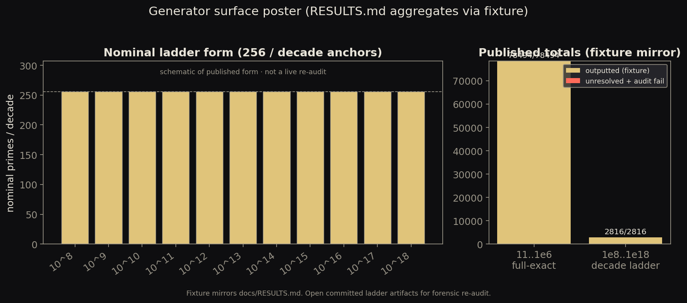

mixed
Chamber ruler strip
Pedagogical illustration of the ordered gap chamber and GWR leftmost min-d selection on toy exemplars. Universal theorems remain in PROOF.md; this figure is not a finite proof surf
Catalog-first demonstrations of Prime Gap Structure objects: chambers, DNI coordinates, bounded-compression envelopes, generator surface posters, and modulus-link schematics. Each entry carries an explicit status chip, one-line status detail, and regime. Version 0.1.0.
visualizations/library/visualizations/library/.venv/bin/python visualizations/scripts/lint_catalog.py && visualizations/library/.venv/bin/python visualizations/scripts/run_all_demos.py && visualizations/library/.venv/bin/python visualizations/scripts/build_gallery.pylibrary/out/ is demo output; gallery/assets/ is a build copy. Do not hand-edit gallery PNGs.website/. Historical plot dumps → visualizations/core-diagrams/ (non-catalog).


